How to Save in the Microsoft Notepad App (Windows 11)
This tutorial covers:
How to Save a File:
How to Save As:
How to Save Multiple Files:
No time to scroll down? Click through this presentation tutorial:
Watch a tutorial video:
How to Save a File With Menu
- Step 1: First edit a Notepad file. In the upper left click the “File” button. 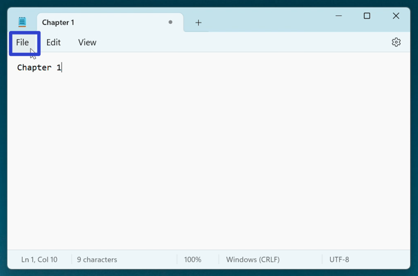
- Step 2: In the menu that opens, click “Save”. 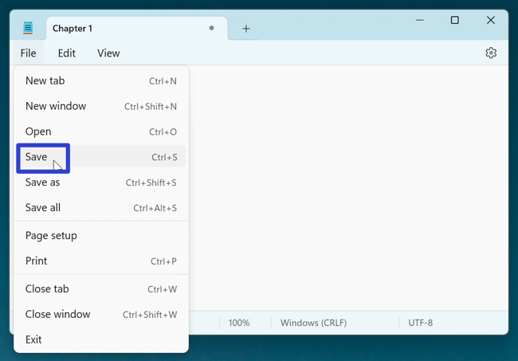
- Step 3: In the “Save as” window that opens, type any text in the “File name” field and click the “Save” button. 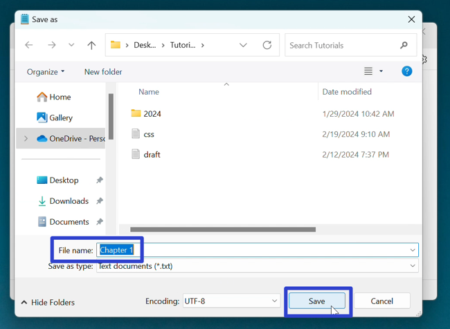
How to Save a File With Keyboard Shortcut
- Step 1: Edit a Notepad file. On the keyboard press Ctrl + S. 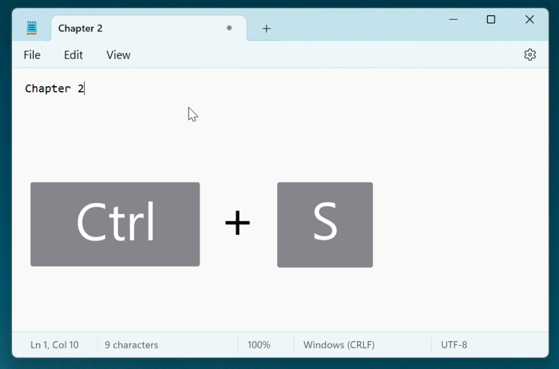
- Step 2: In the “Save as” window that opens, type any text in the “File name” field and click the “Save” button. 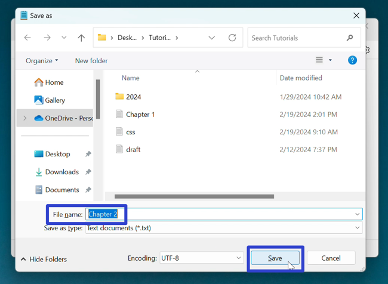
How to Save As With Menu
- Step 1: First open a Notepad file. In the upper left click the “File” button. 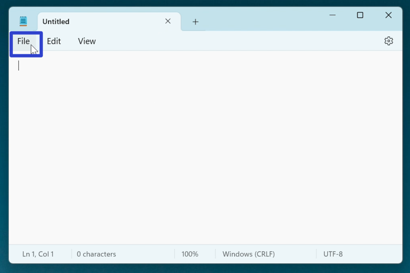
- Step 2: In the menu that opens, click “Save as”. 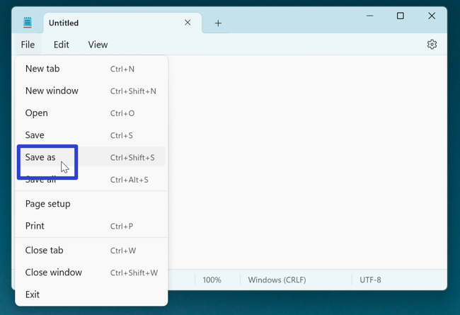
- Step 3: In the “Save as” window that opens, type any text in the “File name” field and click the “Save” button. 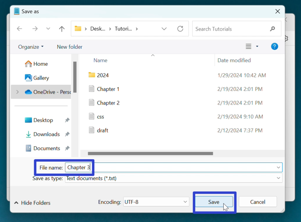
How to Save As With Keyboard Shortcut
- Step 1: Open a Notepad file. On the keyboard press Ctrl + Shift + S. 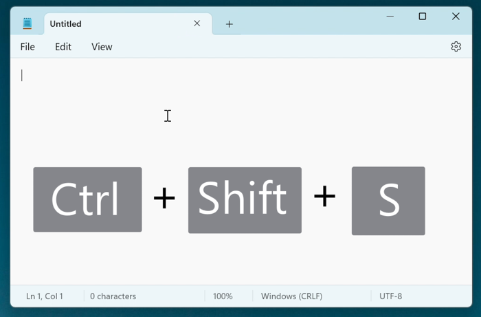
- Step 2: In the “Save as” window that opens, type any text in the “File name” field and click the “Save” button. 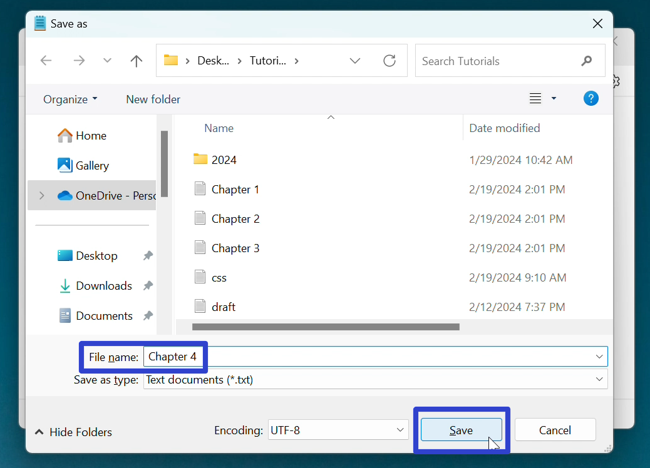
How to Save Multiple Files With Menu
- Step 1: First edit a Notepad window with at least two tabs. In the upper left click the “File” button. 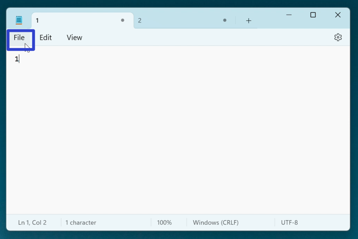
- Step 2: In the menu that opens, click “Save all”. 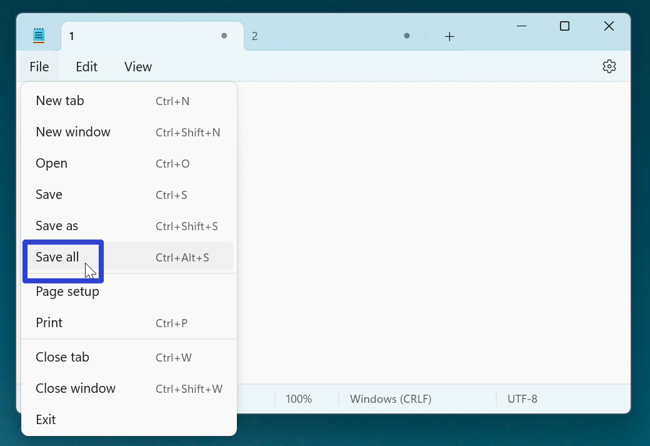
- Step 3: A “Save as” window opens for each tab. Type any text in the “File name” field and click the “Save” button. 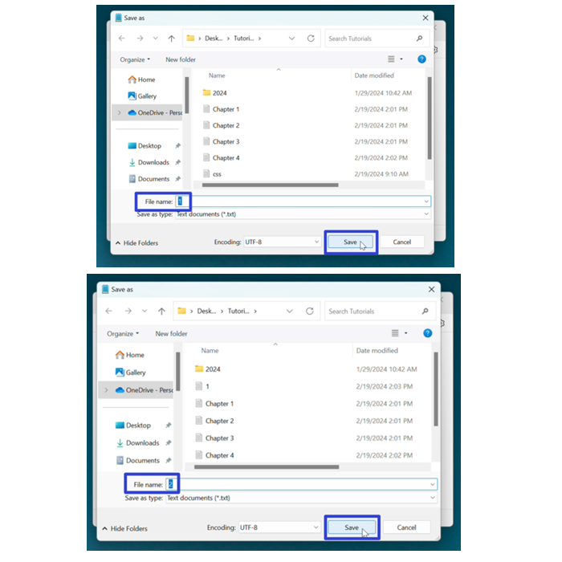
How to Save Multiple Files With Keyboard Shortcut
- Step 1: First open a Notepad window with at least two tabs. On the keyboard press Ctrl + Alt + S. 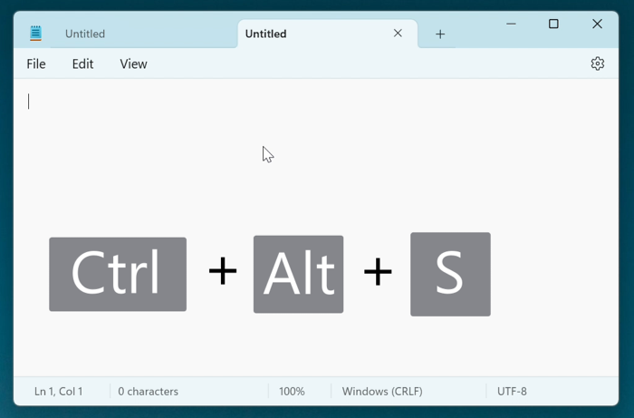
- Step 2: A “Save as” windnow opens for each tab. Type any text in the “File name” field and click the “Save” button. 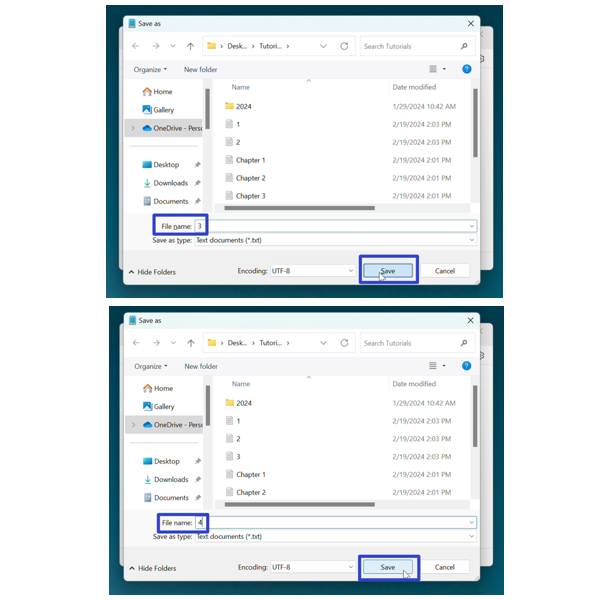
Refer to these instructions later with this free PDF tutorial.